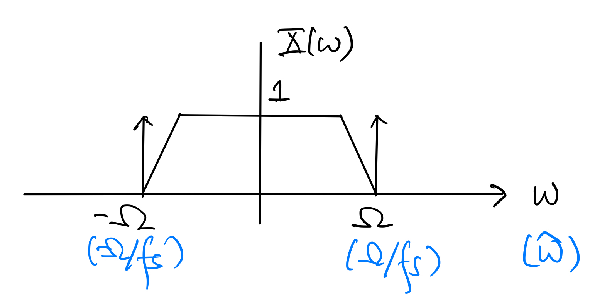
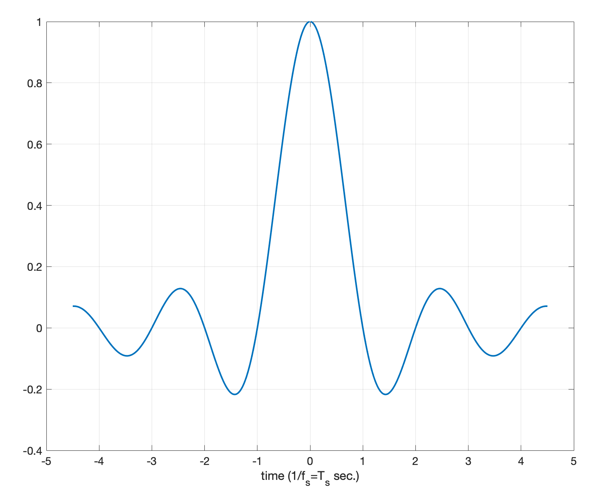
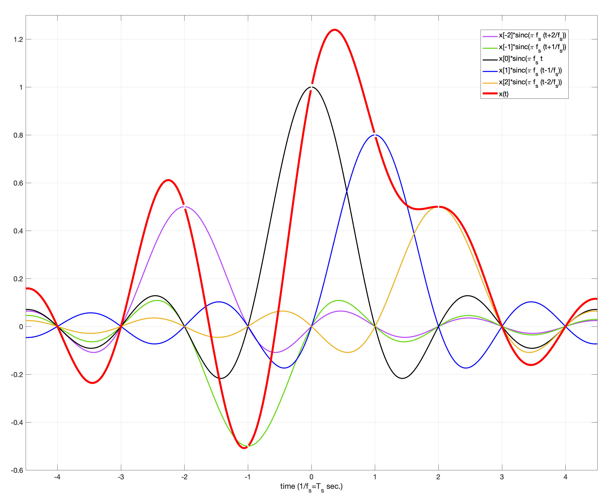

3.2. Sampling Theorem#
Suppose that a continuous-time signal \(x(t)\) is sampled at the sampling rate of \(f_s\) samples per second to obtain the discrete-time signal \(x[n] = x(\frac{n}{f_s})\). The frequency-domain version of the Poisson sum formula (3.5) relates the DTFT \(X(e^{j\hat\omega})\) of the sampled signal \(x[n]\) to the FT \(X(\omega)\) of the original continuous-time signal \(x(t)\):
(3.6)#\[\begin{equation} X(e^{j\hat\omega}) = f_s \sum_{k=-\infty}^{\infty} X((\hat\omega+2\pi k)f_s) \end{equation}\]where the quantity on the RHS is often referred to as the folded spectrum of \(x(t)\). In other words, the DTFT of the sampled signal \(x[n]\) is the folded spectrum of \(x(t)\).
Tip
One may extend the Poisson sum formula to include all finite-energy and some common infinite-energy signals and FTs based on the limiting process with windowing as we did before.
From (3.6), it is clear that the folded spectrum depends on both the FT of the continuous-time signal and the sampling rate. The effects of both factors are best explained in picture. First, let us introduce the concept of bandlimtedness:
Notation
A continuous-time signal \(x(t)\) is bandlimited to \(\Omega = 2\pi B\) radian per second (or \(B\) Hz) if its FT \(X(\omega) = 0\) for \(|\omega| > \Omega\). The quantity \(\Omega\) (or \(B\)) is called the bandwidth of \(x(t)\).
For a simple illustration, consider a bandlimited continuous-time signal \(x(t)\) whose FT \(X(\omega)\) is of real-valued and as shown below:
The bandwidth of \(x(t)\) is \(\Omega\) radians per second, or \(B\) Hz. To draw the folded spectrum of \(x(t)\), we need to consider two different cases:
If \(f_s > 2B\), then the folded spectrum is as below:
Notation
The condition \(f_s > 2B\) is referred to as oversampling. The sampling rate \(2B\) is usually referred to as the Nyquits rate.
If \(f_s \leq 2B\), then the folded spectrum is as below:
Notation
The condition \(f_s \leq 2B\) is referred to as undersampling.
{kind=link}
{kind=link}
{kind=link}
3.2.1. Oversampling (\(f_s > 2B\))#
In this case, we can see from the plot that the FT \(X(\omega)\) of the original continuous-time signal is perserved in the folded spectrum \(X(e^{j\hat\omega})\). Thus, \(X(\omega)\) can be easily recovered from \(X(\omega)\), or equivalently in the time domain, \(x(t)\) can be recovered from \(x[n]\).
In the frequency domain, the ideal reconstruction process is simply:
Cut out the period of the folded spectrum \(X(e^{j\hat\omega})\) over \([-\pi, \pi)\) and scale it by \(\frac{1}{f_s}\).
Substitute \(\hat\omega = \frac{\omega}{f_s}\) in the cut-outi and scaled period of \(X(e^{j\hat\omega})\) to convert it to the FT \(\tilde{X}(\omega)\) of the reconstructed continuous-time signal \(\tilde{x}(t)\), i.e.,
(3.7)#\[\begin{split}\begin{equation} \tilde{X}(\omega) = \begin{cases} \frac{1}{f_s} X\left( e^{j\frac{\omega}{f_s}} \right), & \text{if } -\pi f_s \leq \omega < \pi f_s \\ 0, & \text{otherwise.} \end{cases} \end{equation}\end{split}\]
Since \(X(\omega) = 0\) for \(|\omega| > \Omega\) (\(x(t)\) is bandlimited to \(\Omega\)) and \(\pi f_s > \Omega\), we have \(\tilde{X}(\omega) = X(\omega)\), which of course implies \(\tilde{x}(t) = x(t)\) in the time domain.
Let us reconsider the ideal reconstruction steps above from a time-domain perspective:
(3.8)#\[\begin{split}\begin{align} \tilde{x}(t) &= \frac{1}{2\pi} \int_{-\infty}^{\infty} \tilde{X}(\omega) e^{j\omega t} \, d\omega \\ &= \frac{1}{2\pi} \int_{-\pi f_s}^{\pi f_s} \frac{1}{f_s} X\left( e^{j\frac{\omega}{f_s}} \right) e^{j\omega t} \, d\omega \\ &= \frac{1}{2\pi} \int_{-\pi f_s}^{\pi f_s} \left( \frac{1}{f_s} \sum_{n=-\infty}^{\infty} x[n] e^{-j\frac{\omega n}{f_s}} \right) e^{j\omega t} \, d\omega \\ &= \sum_{n=-\infty}^{\infty} x[n] \frac{1}{2\pi} \int_{-\pi f_s}^{\pi f_s} \frac{1}{f_s} e^{j\omega \left( t - \frac{n}{f_s} \right)} \, d\omega \\ &= \sum_{n=-\infty}^{\infty} x[n] \cdot \frac{\sin\left( \pi f_s (t-\frac{n}{f_s}) \right)}{ \pi f_s (t-\frac{n}{f_s})} \end{align}\end{split}\]Since \(\tilde{x}(t)=x(t)\) if \(\pi f_s > \Omega\), we obtain the following result which is usually referred to as the sampling theorem:
Sampling Theorem
Consider sampling a continuous-time signal \(x(t)\) that is bandlimited to \(B\) Hz at the sampling rate of \(f_s\) samples per second to obtain the discrete-time signal \(x[n] = x(\frac{n}{f_s})\). If \(f_s > 2B\), then
(3.9)#\[\begin{equation} x(t) = \sum_{n=-\infty}^{\infty} x[n] \, \text{sinc} \left( \pi f_s (t-\frac{n}{f_s}) \right) \end{equation}\]where \(\text{sinc}(t) = \frac{\sin t}{t}\).
To illustrate the sampling theorem in picture, let us first plot the sinc kernel (signal) \(\text{sinc}(\pi f_s t)\):
The sampling theorem says that the original continuous-time signal \(x(t)\) can be reconstructed by interpolating the discrete-time (sampled) signal \(x[n]\) using the sinc kernel as long as we oversample:
In practice, we can’t use the ideal sinc kernel to perform interpolation because the length (support) of the sinc kernel is infinite. We have to approximate the reconstruction by using a truncated version of the sinc kernel or other kernels of finite support:
zero-order hold: rectangular kernel \(\begin{cases} 1, & \text{if } |t| < \frac{1}{2f_s} \\ 0, & \text{otherwise.} \end{cases}\)
first-order hold (linear interpolation): triangle kernel \(\begin{cases} 1 - f_s |t|, & \text{if } |t| < \frac{1}{f_s} \\ 0, & \text{otherwise.} \end{cases}\)
A typical practical implementation employs zero-order hold interpolation and then passes the reconstructed signal through an analog lowpass filter to further smooth it. The combination of the zero-order hold interpolation and lowpass filtering is equivalent to using an interpolation kernel that is the convolution between the rectangular kernel and the impulse response of the lowpass filter.
{kind=link}
{kind=link}
3.2.2. Undersampling (\(f_s \leq 2B\))#
In this case, we see from the plot of the folded spectrum that the frequency-shifted copies of \(X(\omega)\) superimpose on each other. This phenomenon is usually called aliasing. Thus, \(X(\omega)\) cannot be recovered from the folded spectrum using the simple steps in the case of oversampling because \(\tilde{X}(\omega) \neq X(\omega)\).
Nevertheless, the interpolation formula in (3.8) is still valid, but \(\tilde{x}(t) \neq x(t)\). The reconstructed signal \(\tilde{x}(t)\) given by (3.8) is called the aliased version of \(x(t)\).
Caution
Note that undersampling \(x(t)\) doesn’t necessarily means that there is no possibility of recovering it from the sampled signal \(x[n]\). However, to be able to do so may require \(x(t)\) to have some special structures and more significant signal processing.
In practice, to avoid the “uncontrolled” effects of aliasing, the continuous-time signal \(x(t)\) is usually passed through an analog lowpass filter with cutoff frequency \(\frac{f_s}{2}\) Hz to remove any frequency components in \(x(t)\) that are above \(\frac{f_s}{2}\) Hz before sampling. The lowpassed signal then will not suffer from aliasing. The analog lowpass filter is often called an antialiasing filter. Of course, we may only reconstruct the lowpassed version of \(x(t)\) from the sampled signal. Nevertheless, applying the antialiasing filter allows us to control the distortion we may suffer from potential undersampling.